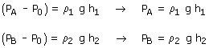
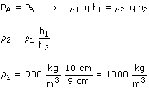

Trazamos una horizontal que pase por la división
entre líquidos y calculamos la presión en dos puntos
de la misma (Uno en cada rama)

Los puntos A y B, del mismo líquido, están
al mismo nivel luego tendrán la misma presión

¿Y no se podría haber
tomado la horizontal que pasa por la superficie del líquido en
la rama izquierda?
No, el principio de la Hidrostática solo puede aplicarse dentro
de un mismo líquido